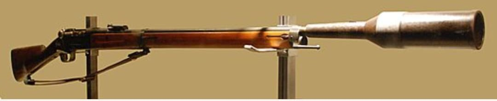
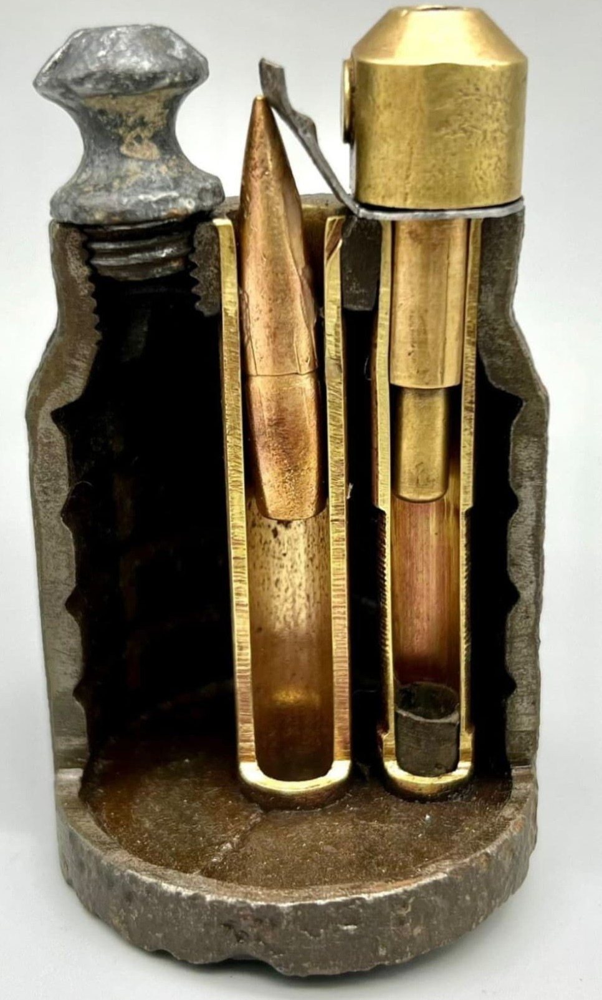

Les armes françaises de la Seconde Guerre mondiale représentent un ensemble varié de modèles issus de plusieurs décennies d’évolution. Entre modernisation rapide, héritage de la Grande Guerre et innovations techniques, l’armement français de 1915 à 1945 reflète une période complexe où coexistent équipements anciens et armes de conception récente.
Cette section du Musée HOP WW2 présente l’ensemble des armes blanches, fusils, pistolets, fusils-mitrailleurs, mitrailleuses et armes d’appui utilisées par les forces françaises durant le conflit. Chaque fiche offre une description détaillée, des photographies, et les éléments permettant d’identifier un modèle authentique.
Le lance‑grenades VB (Viven‑Bessières) est un dispositif permettant de tirer des grenades à fusil à l’aide d’un fusil Lebel ou Berthier. Conçu durant la Première Guerre mondiale, il reste en service en 1939–1940 dans de nombreuses unités françaises.
Simple, robuste et efficace, il permet d’envoyer une grenade explosive à plusieurs dizaines de mètres, offrant à l’infanterie un moyen d’appui léger et rapide sans recourir à un mortier.


Introduit en 1916, le VB devient rapidement l’un des lance‑grenades les plus efficaces de la Première Guerre mondiale. Sa simplicité et sa puissance en font une arme redoutée dans les combats de tranchées.
En 1939–1940, il reste largement utilisé dans les unités françaises, notamment dans les groupes de voltigeurs et les sections d’infanterie. Il permet un appui rapide et précis sans matériel lourd, idéal pour les combats de campagne.